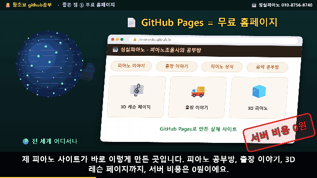

왕초보 github공부 🐙 깃허브란 무엇? 가입부터 로그인까지
월 0원으로 내 홈페이지, 자료 금고, 그리고 인터넷 속 컴퓨터까지 가질 수 있다면 어떨까요? 깃허브(GitHub)가 바로 그런 곳입니다. 영상과 그림으로 하나씩 같이 봐요.
1. 깃과 깃허브는 무엇이 다를까?
git(깃)은 내 컴퓨터 안의 기록 공책이에요. 파일을 저장할 때마다 날짜가 찍힌 도장을 남겨서, 나중에 "어제 그 상태로 돌아가고 싶다"고 하면 되돌아갈 수 있어요. 일종의 타임머신이죠.
GitHub(깃허브)는 그 공책을 맡겨 두는 인터넷 보관 창고예요. 컴퓨터가 고장 나도 창고에 그대로 남아 있고, 친구나 AI와 같은 창고를 보면서 함께 고칠 수 있어요.
2. 딱 4단어만 기억해요
3. 깃허브가 좋은 점
① 무료 홈페이지 — GitHub Pages
공개 저장소에 웹 페이지 파일을 넣으면 내이름.github.io 주소의 홈페이지가 생겨요. 서버를 빌린 것처럼 쓰는데 비용은 0원이에요.
② 자료 금고 — 기록이 남고, 비공개도 가능
올린 파일의 바뀐 기록이 모두 남아 실수로 지워도 되살릴 수 있어요. 비공개 저장소는 나만 여는 금고라서, 저는 개인 작곡 연습 영상을 비공개 금고에 넣어 두고 클라우드 AI와 주고받았어요.

③ 인터넷 속 컴퓨터 — Actions · Codespaces
GitHub Actions는 정해 둔 시간에 리눅스 컴퓨터가 일을 해 줘요. 공개 저장소는 무료, 비공개 저장소는 개인 무료 계정 기준 한 달 2,000분까지 무료예요. Codespaces는 브라우저 안에 리눅스 컴퓨터를 띄워 주고, 개인 무료 계정은 한 달 120 코어 시간(2코어 컴퓨터로 약 60시간)을 쓸 수 있어요.
④ AI와 함께 일하기 · ⑤ 세계의 공개 자료
클로드코드 같은 AI와 같은 창고를 보며 함께 고칠 수 있고, 전 세계 사람들이 공개한 코드와 자료를 무료로 보고 배울 수 있어요.
4. 가입부터 로그인까지 따라하기
- github.com에 들어가 오른쪽 위 Sign up (가입하기)를 눌러요.
- Email 칸에 자주 보는 이메일 주소를 적어요.
- Password 비밀번호: 15자 이상, 또는 8자 이상에 숫자와 영어 소문자를 섞어요.
- Username 사용자 이름: 내 홈페이지 주소(이름.github.io)가 되니 짧고 쉽게!
- 소식 메일 받기(Email preferences)는 선택, 그다음 Continue (계속).
- 사람 확인 퍼즐을 풀어요 (Verify = 확인).
- 메일함에 온 숫자 코드를 넣으면 가입 끝!
- 로그인 연습: Sign in → 이메일 또는 사용자 이름 + 비밀번호 → 로그인 성공 🎉
- 꼭! Settings → Password and authentication에서 2단계 인증(휴대폰 확인)을 켜요.
5. 알아 둘 점
📦 파일 하나는 100MB까지 올릴 수 있어요. (웹 화면에서 바로 올릴 때는 25MB까지)
6. 다음 편 예고
첫 저장소를 만들고 → 내 홈페이지를 올려 볼게요. 🚀